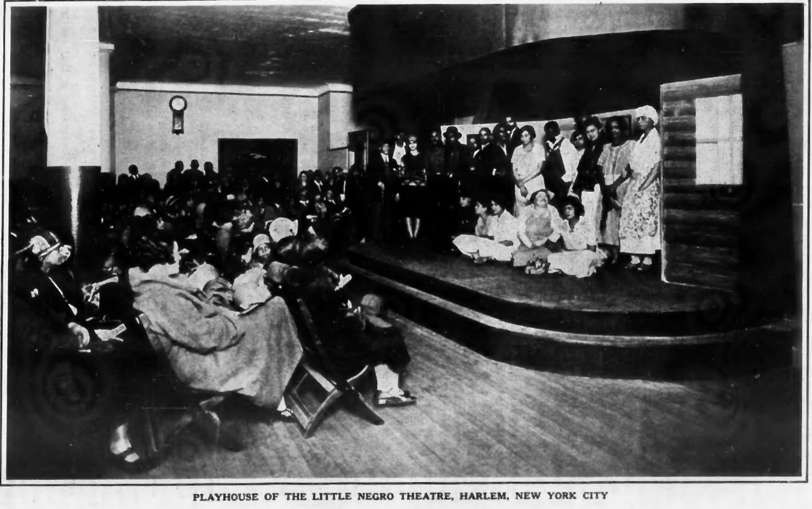

‘Krigwa Players Little Negro Theatre’
The Story of a Little Theatre Movement
It is customary to regard Negroes as an essentially dramatic race; and it is probably true that tropical and sub-tropical peoples have more vivid imagination, are accustomed to expressing themselves with greater physical and spiritual abandon than most folk. And certainly, life as black and brown and yellow folk have known it is big with tragedy and comedy. The home life of Africans shows this natural dramatic tendency; the strides of the native African, the ceremony of home and assembly, the intense interest in music and play, all attest this.
In America, on the other hand, the road to freedom for the Negro lay through religious organization long before physical emancipation came. The Negro church gave the slave almost his only freedom of spirit and of the churches that came to proselyte among the slaves, only those were permanently successful which were strongly tinged with Puritanism, namely: the Baptist and the Methodist. These churches frowned upon drama and the play, upon the theatre and the dance; and for this reason the American Negro has been hindered in his natural dramatic impulses.
Today as the renaissance of art comes among American Negroes, the theatre calls for new birth. But most people do not realize just where the novelty must come in. The Negro is already in the theatre and has been there for a long time; but his presence there is not yet thoroughly normal. His audience is mainly a white audience, and the Negro actor has, for a long time, been asked to entertain this more or less alien group. The demands and ideals of the white group and their conception of Negroes have set the norm for the black actor. He has been a minstrel, comedian, singer and lay figure of all sorts. Only recently has he begun tentatively to emerge as an ordinary human being with everyday reactions. And here he is still handicapped and put forth with much hesitation, as in the case of “The Nigger,” “Lulu Belle” and “The Emperor Jones.”
In all this development naturally then the best of the Negro actor and the most poignant Negro drama have not been called for. This could be evoked only by a Negro audience desiring to see its own life depicted by its own writers and actors.
For this reason, a new Negro theatre is demanded and it is slowly coming. It needs, however, guiding lights. For instance, some excellent groups of colored amateurs are entertaining colored audiences in Cleveland, in Philadelphia and elsewhere. Almost invariably, however, they miss the real path. They play Shakespeare or Synge or reset a successful Broadway play with colored principals.
The movement which has begun this year in Harlem, New York City, lays down four fundamental principles. The plays of a real Negro theatre must be: 1. About us. That is, they must have plots which reveal Negro life as itis. 2. By us. That is, they must be written by Negro authors who understand from birth and continual association just what it means to be a Negro today. 3. For us. That is, the theatre must cater primarily to Negro audiences and be supported and sustained by their entertainment and approval. 4. Near us. The theatre must be in a Negro neighborhood near the mass of ordinary Negro people.
Only in this way can a real folk-play movement of American Negroes be built up. Even this building encounters certain difficulties. First, there is the problem of the plays. Five years ago there were practically no plays that filled the specifications noted. Already, however, this situation has begun to change on account of the prizes offered by The Crisis magazine and other agencies and for other reasons. There are available today a dozen or more plays of Negro life worth staging and the quantity and quality will increase very rapidly as the demand grows. The problem of actors is the least of the difficulties presented. In any group of colored people it is possible to get an unusual number of persons gifted with histrionic ability. The only trouble comes when effort is made to select the actors from limited groups or exclusively from among social acquaintances or friends. The third difficulty, that of a suitable playhouse, is real and must be worked out as circumstances permit. There are usually halls that can be used temporarily. Now and then a church is liberal enough to house a play.
In the New York movement, advantage is being taken of the fact that in the center of Harlem there is a branch of the New York Public Library which has in its basement a lecture room. The administration of this library has in the last few years changed from an attitude of aloofness from its Negro surroundings, and even resentment, to an attitude which recognizes that this library is serving a hundred thousand Negroes or more. It specializes on books which Negroes want to read; it subscribes to their periodicals and has lectures and art exhibits which attract them.
Some time ago Miss Ernestine Rose, the Librarian, suggested that a Little Theatre movement be started in connection with this library; but other activities interfered. This year the library authorities expressed their willingness to help equip a small and inexpensive stage in the lecture room and a group of 30 persons interested in such a theatre has been organized.
Foremost among these is Charles Burroughs. Charles Burroughs was trained in the college department of Wilberforce and at the School of Expression in Boston and has been a dramatic reader for many years for the Board of Education in New York City. He has been unusually successful in training actors as was shown by his training the groups which gave the pageant, “The Star of Ethiopia,” in New York, Washington, Philadelphia and Los Angeles.
In the Harlem Little Negro Theatre the library authorities built the stage and dressing rooms and furnished the lighting equipment. The players group furnished the curtain, the scenery, gave the plays and secured the audiences. Three one-act plays were selected, for the initial experiment. Two were tragedies by Willis Richardson: “Compromise,” which was published in The New Negro, and “The Broken Banjo,” which took the first prize in The Crisis Contest of 1925. The third, “The Church Fight,” by Mrs. R. A. Gaines-Shelton, is a comedy which took the second prize in The Crisis Contest of 1925. A cast of 20 persons was required and they rehearsed faithfully. Louise Latimer, assisted by Aaron Douglas, painted the scenery and on May 3, 10 and 17 the plays were given before full houses averaging 200 persons at each performance.
 The success of the experiment is unquestioned. The audiences were enthusiastic and wanted more. The price of admission to membership in the group which gave the right to see the performances was only 50 cents and the total expense of staging the plays, not counting expenditures by the Library, was about $165 while the returns were something over $240. The players not only perform plays but they welcome other groups under easy conditions to come and use their playhouse under their patronage.
A second K. P. L. N. T. is being organized in Washington, D. C., and it is hoped the movement will spread widely.